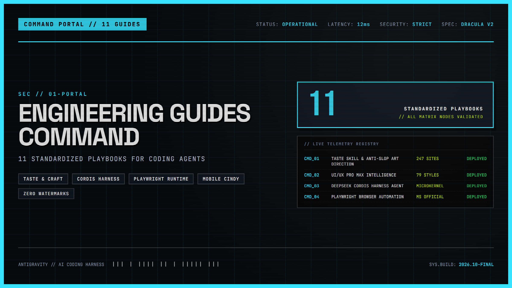

Hệ thống Guide & Tài liệu kỹ thuật
Tập hợp các phân tích chuyên sâu và hướng dẫn thao tác trực tiếp trên 20 kho mã nguồn mở hàng đầu: bộ sưu tập skill kỹ thuật, nguyên tắc thiết kế frontend, nền tảng agent harness và công cụ phụ trợ.

Nhấp để phóng to11 Kỹ năng Kỹ thuật Chọn lọc (Featured Agent Skills)
Các kỹ năng chuẩn hóa được tích hợp trực tiếp vào hệ thống tra cứu, kết nối chặt chẽ với các bộ tài liệu phân tích chuyên sâu.
Chỉ đạo nghệ thuật chống thiết kế AI rập khuôn (anti-slop). Chọn hướng mỹ thuật từ 247 website Awwwards và đo đạc qua trình duyệt thật.
Hệ tri thức UI/UX thông minh: 79 phong cách, 192 bảng màu sản phẩm, 74 bộ ghép font, 119 quy tắc UX, 17 preset GSAP và 22 tech stacks.
Bộ công cụ kiểm thử frontend web app cục bộ với Playwright: quản lý vòng đời server (with_server.py), chụp ảnh màn hình và xem browser logs.
Bộ công cụ khởi tạo và phát triển artifact HTML/React đa component phức tạp với Tailwind CSS và shadcn/ui: quản lý state và routing nội bộ.
Bộ tiêu chuẩn rà soát giao diện web theo chuẩn thiết kế Vercel: 100+ quy tắc về accessibility (a11y), responsive, typography và touch targets.
Router và tập quy chuẩn sản xuất video programmatic bằng code React với Remotion: composition, animation timing và render hiệu năng cao.
Quy trình xây dựng triết lý thị giác (Design Philosophy) và biểu đạt thành tác phẩm canvas đồ họa (.png / .pdf): cấu trúc không gian và màu tương phản.
Quy trình rà soát code theo hai trục độc lập bằng sub-agents song song: trục Standards (chuẩn repo) và trục Spec (khớp yêu cầu kỹ thuật).
Hệ từ vựng và nguyên lý thiết kế mô-đun sâu (Deep Modules): tối đa hóa hành vi đằng sau giao diện tinh gọn, đặt đúng ranh giới nối (seams).
Quy ước lập trình nền tảng đa ngôn ngữ từ Everything Claude Code: đặt tên rõ ràng, tính bất biến (immutability), xử lý lỗi tường minh.
Định hướng thiết kế thị giác khác biệt và có cá tính riêng cho web: thẩm mỹ bám rễ vào bản sắc chủ thể, typography đặc trưng và bố cục phá cách.
Bộ sưu tập skill
Các gói kỹ năng chuẩn hóa giúp agent làm việc có quy trình, hỏi kỹ yêu cầu, viết test trước và tối ưu mã nguồn.
Quy trình kỹ thuật phần mềm chống "vibe coding": phỏng vấn làm rõ yêu cầu (/grill-me), TDD red-green-refactor, lập spec và giữ kiến trúc gọn gàng.
Bộ skill chính thức từ Vercel Labs: 40+ quy tắc tối ưu React/Next.js, 100+ tiêu chuẩn web design & accessibility, React Native và deploy.
Kỹ năng chưng cất mô hình tư duy của các chuyên gia kiệt xuất (Feynman, Munger, Musk, Naval) thành góc nhìn cố vấn độc lập cho AI agent.
Cẩm nang trực quan hóa kiến trúc hệ thống phân tán từ ByteByteGo: API Gateway, Caching, DB Sharding và Microservices.
Mô hình phát triển bản thân 4 chiều (Tâm trí, Thể chất, Tinh thần, Sự nghiệp) và phỏng vấn AI tháo gỡ điểm nghẽn.
Thiết kế giao diện
Chỉ đạo nghệ thuật và hệ thống token giúp agent loại bỏ thiết kế rập khuôn, dựng UI có gu và chiều sâu.
Art direction cho agent đúc kết từ 247 website Awwwards: cấm các mẫu AI rập khuôn (anti-slop), bốc hướng thiết kế theo chủ thể và đo đạc qua trình duyệt thật.
Bộ sưu tập DESIGN.md từ các thương hiệu hàng đầu (Linear, Stripe, Apple, Claude): cách chuẩn hóa tokens để AI agent viết UI khớp 100%.
Tuyển tập 8 kỹ năng frontend hàng đầu: Taste Skill v2, Emil Kowalski animation, Vercel guidelines và 3 núm xoay thẩm mỹ.
Khung công nghệ mã nguồn mở của HeyGen biến HTML, CSS thành video MP4 60FPS tất định cho coding agent.
Nền tảng & Agent Harness
Các bộ khung điều phối vòng đời agent, quản lý tiến trình, công cụ sandbox và kết nối đa thiết bị.
Khung điều phối agent chính thức của DeepSeek dựa trên vi nhân Cordis: nạp plugin động, tương thích DeepSeek-V3 và R1, bảng điều khiển Web UI.
Bộ khung hoàn chỉnh nâng cấp Claude Code: kỹ năng thực chiến, bản năng tự động, bộ nhớ liên phiên và hàng rào bảo mật guardrails.
Điều khiển coding agent trên điện thoại và máy tính bảng: kết nối máy trạm qua WebSocket, hỗ trợ Claude Code, Codex và Pi harness.
Kỹ năng kiểm toán bảo mật 6 pha chính thức từ Cloudflare: sổ cái coverage ledger, verifier độc lập và triệt tiêu báo động giả.
Bộ plugin tri thức nghề nghiệp chính thức của Anthropic: kỹ năng nghề, lệnh tắt và đầu nối MCP (Slack, Notion, Jira) cho doanh nghiệp.
Công cụ & Tiện ích
Các công cụ dòng lệnh và giao diện hỗ trợ quản trị kỹ năng, tự động hóa trình duyệt và bảo vệ quyền riêng tư.
Công cụ trực quan & CLI quản lý Claude Skills và Codex tools: cài đặt 1-click, đồng bộ preset và cô lập phạm vi workspace vs toàn cục.
CLI chính thức từ Microsoft cho browser automation: chụp ảnh màn hình, xuất cây accessibility tinh gọn và vòng lặp look-and-fix cho AI agent.
Công cụ Python chuẩn (zero dependencies) tẩy sạch watermark ẩn, ký tự vô hình Unicode và siêu dữ liệu C2PA/EXIF trong tài liệu và ảnh AI.
Biểu đồ tri thức AST cho codebase, tài liệu và ảnh: tiết kiệm 71.5x token, không cần vector DB, xuất Obsidian và MCP.
Công cụ Microsoft chuyển đổi PDF, Word, Excel, PowerPoint thành Markdown sạch, loại bỏ việc nhân đôi token ảnh trên Claude.
Bộ công cụ dịch ngược mã nguồn và hành vi ứng dụng đa tầng (Native, Electron, JS, .NET) với 409k sao cho coding agent.